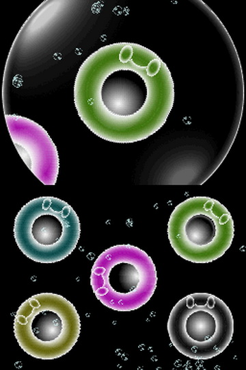
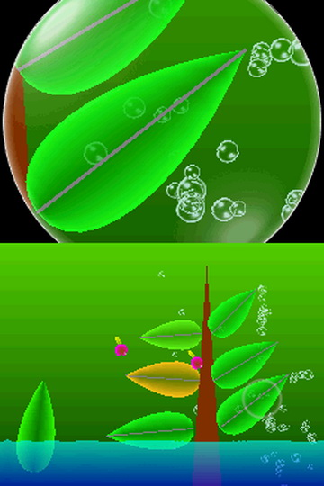
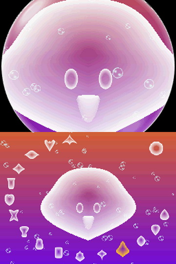

I'll preface this review with a little disclaimer. Electroplankton is my favorite video game of all time. As such, this review is extremely biased. Electroplankton, in my opinion, is a flawless work of art.
In my youth, I'm talkin' pre-teenager years, I was a devote follower of the Nintendo official webpage. It was very nearly the only webpage I ever visited. I was also obsessed with video games. When I wasn't playing them, I was drawing ideas for my own games. During this period, I could tell you every single game that was released for the Gamecube and Gameboy Advance and what games were about to be released.
E3 was something of a religious event because of this. Having no third-party sources (outside the Nintendo forums), as to what games were on the horizon, it was magical to see, at once, everything that developers were working on for Nintendo's systems. Some of these releases appeared in "News" section on Nintendo's site, but others were inconspicuously added to the so-called "Master Games List", a compilation of all the officially released and announced games for Nintendo platforms. A normal person would probably not notice a game slipping into this list. But I was no normal Nintendo fan, so it did not get past me when a peculiarly titled game, Electroplankton, appeared on this list.
At this point, I really had seen it all. I had looked at every, single game's entry in the Master Game List. I was acutely aware of the "types" of games out there. The puzzle game. The 2D platformer. The 3D platformer. You get the idea. So, when I opened Electroplankton, expecting some sort of budget Spongebob action game, I was befuddled. This was the first game I'd seen that I couldn't immediately classify under one of the labels that I had subconsciously divised. It was just different in a way unlike in any game I'd seen before. And the details were so sparse. I was intrigued and enamored. I didn't have a name for what it was at the time. I actually insisted that Electroplankton was a game when I firt heard of the age old kart/game debate, but in hindsight I don't really know if that is a good label for it. But game or not, it is art. And it's impact on me has been quite possibly greater than any other single piece of art.
The "game" (I'll call it a game for the sake of this review), is divided into 10 different screens. Each screen contains one or more of a certain organism that the player interacts with via the touchscreen, microphone, and/or physical buttons. The menu selection is presented with each organism individually selectable via a simple two-screen display that provides a brief description on how to interact with the organism.
There are no objectives and no unlockables. Accustomed to the linear progression of virtually all traditional video games at the time, I was a bit phased upon first opening the game to see this. I'd heard before playing that you can sort of make your own objectives. Hannenbow, for example, is a creature that is launched periodically from a leaf in the corner of the screen, ricocheting of another plant and producing sounds as it plunks its way to the ground. There is a "game" you can play wherein you adjust the leaves of a plant so that the Hannenbow ricochet of all the leaves before plunking back to the water. After enough Hannenbow do this, the leaves will all turn red and a flower will bloom. Upon playing Electroplanktopn, I quickly realized that this is the only thing that approaches any sort of objective. But that's just fine. In fact, I love that Toshio Iwai didn't feel the need to give players an objective.
One of my the organisms I had most fun playing with was "Volvoice". Volvoice listens to the microphone input and mutates it depending on which shape it is, which can be altered by selecting one of the bubbles that surrounds it.
